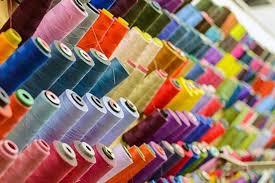

Conoce Sobre Nosotros

Historia de Cooperativa Tercimex
El día 8 de Julio de 2015, fue constituida oficialmente la cooperativa quedando con el nombre de "COOPERATIVA TERCIMEX TERCIOPELOS MEXICANOS de S.C. de R.L. de C.V.
Aqui en Tercimex Terciopelos Mexicanos, nace una nueva historia, en la fabricación de productos selectos como son los terciopelos.
Conservando el legado de experiencia adquirida de técnicas francesas.